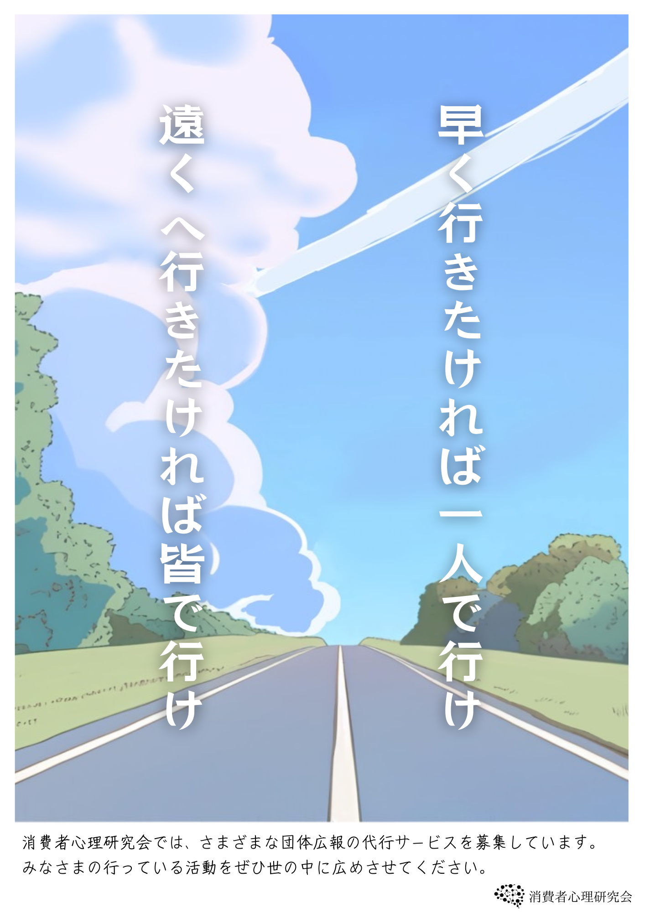

消費者心理研究会
お知らせ
最新の更新や告知はこちらに表示されます。
私たちはその名の通り、消費者の心理を研究しています。消費者の範囲はさまざまで、ファンダム分析に学内集団の動向など多岐に渡っています。
部員を集めたいけど広報の仕方が分からない、ポスターを作りたいけどそもそもポスターってどうやって作るの？そんな疑問や課題を抱えている団体のみなさん、ぜひ相談してください。
過去の活動
ここに過去に作成したポスターを表示します。


研究会について
ここに代表者、連絡先などの研究会情報を表示します。
代表者: 中間 さや夏
連絡先: kuas.conphysg@google.com
FAQ
よくある質問
質問1:
質問2: ここに質問2の内容